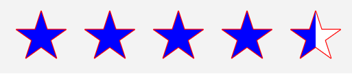
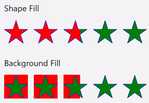
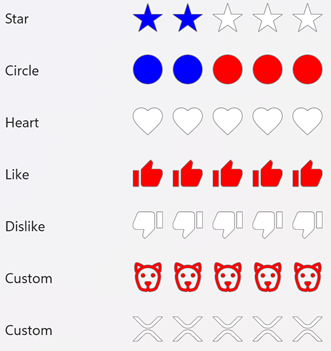

RatingView
The .NET MAUI Community Toolkit RatingView is an ItemTemplate designed to provide developers with a flexible and customizable rating mechanism, similar to those used on popular review and feedback platforms.
Syntax
Including the XAML namespace
In order to use the toolkit in XAML the following xmlns needs to be added into your page or view:
xmlns:toolkit="http://schemas.microsoft.com/dotnet/2022/maui/toolkit"
Therefore the following:
<ContentPage
x:Class="CommunityToolkit.Maui.Sample.Pages.MyPage"
xmlns="http://schemas.microsoft.com/dotnet/2021/maui"
xmlns:x="http://schemas.microsoft.com/winfx/2009/xaml">
</ContentPage>
Would be modified to include the xmlns as follows:
<ContentPage
x:Class="CommunityToolkit.Maui.Sample.Pages.MyPage"
xmlns="http://schemas.microsoft.com/dotnet/2021/maui"
xmlns:x="http://schemas.microsoft.com/winfx/2009/xaml"
xmlns:toolkit="http://schemas.microsoft.com/dotnet/2022/maui/toolkit">
</ContentPage>
Using the RatingView
The following example shows how to create a RatingView:

<ContentPage
x:Class="CommunityToolkit.Maui.Sample.Pages.MyPage"
xmlns="http://schemas.microsoft.com/dotnet/2021/maui"
xmlns:x="http://schemas.microsoft.com/winfx/2009/xaml"
xmlns:toolkit="http://schemas.microsoft.com/dotnet/2022/maui/toolkit">
<VerticalStackLayout>
<toolkit:RatingView
EmptyShapeColor="White"
FillColor="Blue"
FillOption ="Shape"
IsReadOnly="False"
ShapePadding="3,7,7,3"
ShapeDiameter="37"
MaximumRating="5"
Rating="4.5"
Shape="Star"
ShapeBorderColor="Red"
ShapeBorderThickness="1"
Spacing="3" />
</VerticalStackLayout>
</ContentPage>
The equivalent C# code is:
using CommunityToolkit.Maui.Views;
partial class MyPage : ContentPage
{
public MyPage()
{
RatingView ratingView = new()
{
EmptyShapeColor = Colors.White,
FillColor = Colors.Blue,
FillOption = RatingViewFillOption.Shape,
IsReadOnly = false,
ShapePadding = new Thickness(3,7,7,3),
ShapeDiameter = 37,
MaximumRating = 5,
Rating = 4.5,
Shape = RatingViewShape.Star,
ShapeBorderColor = Colors.Red,
ShapeBorderThickness = 1,
Spacing = 3,
};
Content = ratingView;
}
}
Properties
| Property | Type | Description |
|---|---|---|
| CustomShapePath | string |
Gets or sets the SVG path for a custom rating view shape. This is a bindable property. |
| EmptyShapeColor | Color |
Gets or sets the color that is applied to the unfilled (empty) rating shape. The default value is Transparent. This is a bindable property. |
| FillColor | Color |
Gets or sets the color of the fill used to display the current rating. Set FillOption to apply this color to RatingViewFillOption.Background or RatingViewFillOption.Shape. The default value is Yellow. This is a bindable property. |
| IsReadOnly | bool |
Gets whether this layout is read-only. The default value is false. This is a bindable property. |
| Shape | RatingViewShape |
Gets or sets the rating item shape. The property is of type RatingViewShape and is an enumeration. The default value is Star. This is a bindable property. |
| ShapeDiameter | double |
Gets or sets the shape diameter in points. The default value is 20. |
| MaximumRating | int |
Gets or sets the maximum number of ratings. The range of this value is 1 to 25; the default value is 5. This is a bindable property. |
| RatingChanged | EventHandler<RatingChangedEventArgs> |
Event occurs when the rating is changed. |
| FillOption | RatingViewFillOption |
Gets or sets the element to fill when a Rating is set. The property is of type RatingViewFillOption and is an enumeration. The default value of this property is RatingViewFillOption.Shape. This is a bindable property. |
| Rating | double |
Gets or sets a value indicating the current rating value, allowing for both pre-defined ratings (e.g., from previous user input or stored data) and updates during runtime as the user interacts with the control. The default value is 0. This is a bindable property. |
| ShapeBorderColor | Color |
Gets or sets the border color of the rating item shape. The default value of this is Grey. This is a bindable property. |
| ShapeBorderThickness | Thickness |
Gets or sets the border thickness of the rating item shape. The default value is a Thickness with all values set to 1. This is a bindable property. |
Tip
Additional base class properties can be found in the HorizontalStackLayout Class.
Set custom shape path
The CustomShapePath property is a string that allows for the defining of custom SVG paths. This feature enables developers to implement unique SVG shapes, such as distinctive symbols, as rating items.
Important
CustomShapePath is only used when the Shape property is set to Shape.Custom. Setting Shape.Custom when CustomShapePath is null will throw an InvalidOperationException: Unable to draw RatingViewShape.Custom because CustomShapePath is null. Please provide an SVG Path to CustomShapePath.
The following example sets the custom and shape properties:
<toolkit:RatingView
CustomShapePath ="M 12 0C5.388 0 0 5.388 0 12s5.388 12 12 12 12-5.38 12-12c0-6.612-5.38-12-12-12z"
Shape="Custom" />
The equivalent C# code is:
RatingView ratingView = new()
{
CustomShapePath = "M 12 0C5.388 0 0 5.388 0 12s5.388 12 12 12 12-5.38 12-12c0-6.612-5.38-12-12-12z",
Shape = RatingViewShape.Custom,
};
For more information about custom shapes, see Shapes.Path.
Set empty shape color
The EmptyShapeColor property is a Color for the unfilled (empty) rating shapes. This allows for clear visual differentiation between rated and unrated shapes.
The following example sets the empty color property:
<toolkit:RatingView
EmptyShapeColor="Grey" />
The equivalent C# code is:
RatingView ratingView = new()
{
EmptyShapeColor = Colors.Grey,
};
Set filled (rated) color
The FillColor property is a Color that will be applied to the filled (rated) portion of each shape, offering flexibility in defining the visual aesthetic of the rating items when selected by the user. Use FillOption to apply this color to the RatingViewFillOption.Background or the RatingViewFillOption.Shape.
The following example sets the filled color property:
<toolkit:RatingView
FillColor="Green" />
The equivalent C# code is:
RatingView ratingView = new()
{
FillColor = Colors.Green,
};
Set is read only
The IsReadOnly property is a bool that will enable or disable the user from modifying the Rating value by tapping on the RatingView.
The following example sets the is read-only property:
<toolkit:RatingView
IsReadOnly="True" />
The equivalent C# code is:
RatingView readOnlyRatingView = new()
{
IsReadOnly = True,
};
Set shape padding
The ShapePadding property is a Thickness for the padding between the rating control and its corresponding shapes, allowing for finer control over the appearance and layout of the rating shapes.
The following example sets the item padding property:
<toolkit:RatingView
ShapePadding="3, 7, 7, 3" />
The equivalent C# code is:
RatingView ratingView = new()
{
ShapePadding = new Tickness(3, 7, 7, 3),
};
Set shape diameter
The ShapeDiameter property is a double that customizes the shape size to fit the overall design of the application, providing the flexibility to adjust the control to various UI layouts.
The following example sets the item padding property:
<toolkit:RatingView
ShapeDiameter="37" />
The equivalent C# code is:
RatingView ratingView = new()
{
ShapeDiameter = 37,
};
Set maximum rating
The MaximumRating property is an int for setting the total number of items (e.g., stars, hearts, etc., or custom shapes) available for rating. This allows for ratings of any scale, such as a 5-star or 10-star system, depending on the needs of the application. The range of this value is 1 to 25; the default value is 5.
Note
If the value is set to 1, the control will toggle the rating between 0 and 1 when clicked/tapped. If the value is set below the current Rating, the rating is adjusted accordingly.
The following example sets the maximum rating property:
<toolkit:RatingView
MaximumRating="7" />
The equivalent C# code is:
RatingView ratingView = new()
{
MaximumRating = 7,
};
Set fill option
The FillOption property is an enum of type RatingViewFillOption for setting how the fill is applied when the Rating is set or tapped, enabling more nuanced visual presentation, such as filling only the interior of the shapes or the full item. The available options are:
Shape- (default) Fill the RatingView shape.Background- Fill the background behind the shape
The following example sets the rating fill property:

<toolkit:RatingView
FillOption="Shape" />
<toolkit:RatingView
FillOption ="Background" />
The equivalent C# code is:
RatingView shapeFillRatingView = new()
{
FillOption = RatingViewFillOption.Shape,
};
RatingView itemFillRatingView = new()
{
FillOption = RatingViewFillOption.Background,
};
Set rating
The Rating property is a double for setting the current rating value, allowing for both pre-defined ratings (e.g., from previous user input or stored data) and updates during runtime as the user interacts with the control.
The following example sets the rating property:
<toolkit:RatingView
Rating="3.73" />
The equivalent C# code is:
RatingView ratingView = new()
{
Rating = 3.73,
};
Handle rating changed event
The RatingChanged event has the argument type of RatingChangedEventArgs. The event is raised when the Rating property is changed, and the element IsReadOnly is false.
The RatingChangedEventArgs exposes a single property:
Rating- The new rating value.
The following example shows how to attach the event:
<toolkit:RatingView
RatingChanged="RatingView_RatingChanged" />
The equivalent C# code is:
RatingView ratingView = new();
ratingView.RatingChanged += RatingView_RatingChanged;
The following example is the code-behind to handle the event:
void RatingView_RatingChanged(object sender, RatingChangedEventArgs e)
{
double newRating = e.Rating;
// The developer can then perform further actions (such as save to DB).
}
Set shape
The Shape property is an enum of type RatingViewShape for setting the rating item shape of the ratings, such as stars, circles, like, dislike, or any other commonly used rating icons. The available options are:
Star- (default)HeartCircleLikeDislikeCustom- RequiresCustomShapePathto first be defined; will throwInvalidOperationExceptionifCustomShapePathisnull
The following example sets the rating fill property:

<toolkit:RatingView
Shape="Star" />
<toolkit:RatingView
Shape="Heart" />
<toolkit:RatingView
Shape="Circle" />
<toolkit:RatingView
Shape="Like" />
<toolkit:RatingView
Shape="Dislike" />
<toolkit:RatingView
CustomShapePath="M 12 0C5.388 0 0 5.388 0 12s5.388 12 12 12 12-5.38 12-12c0-6.612-5.38-12-12-12z"
Shape="Custom" />
The equivalent C# code is:
RatingView starRatingView = new()
{
Shape = RatingViewShape.Star,
};
RatingView heartRatingView = new()
{
Shape = RatingViewShape.Heart,
};
RatingView circleRatingView = new()
{
Shape = RatingViewShape.Circle,
};
RatingView likeRatingView = new()
{
Shape = RatingViewShape.Like,
};
RatingView dislikeRatingView = new()
{
Shape = RatingViewShape.Dislike,
};
RatingView customRatingView = new()
{
CustomShapePath = "M 12 0C5.388 0 0 5.388 0 12s5.388 12 12 12 12-5.38 12-12c0-6.612-5.38-12-12-12z",
Shape = RatingViewShape.Custom,
};
Set shape border color
The ShapeBorderColor is a Color for setting the border color of the rating item shape. This provides additional flexibility to create visually distinct and stylized rating shapes with custom borders.
The following example sets the shape border color property:
<toolkit:RatingView
ShapeBorderColor="Grey" />
The equivalent C# code is:
RatingView ratingView = new()
{
ShapeBorderColor = Colors.Grey,
};
Set shape border thickness
The ShapeBorderThickness is a double for setting the thickness of the shape border. This provides additional flexibility to create visually distinct and stylized rating shapes with custom borders.
The following example sets the shape border thickness property:
<toolkit:RatingView
ShapeBorderThickness="3" />
The equivalent C# code is:
RatingView ratingView = new()
{
ShapeBorderThickness = 3,
};
Examples
You can find examples of this control in action in the .NET MAUI Community Toolkit Sample Application:
API
You can find the source code for RatingView over on the .NET MAUI Community Toolkit GitHub repository.